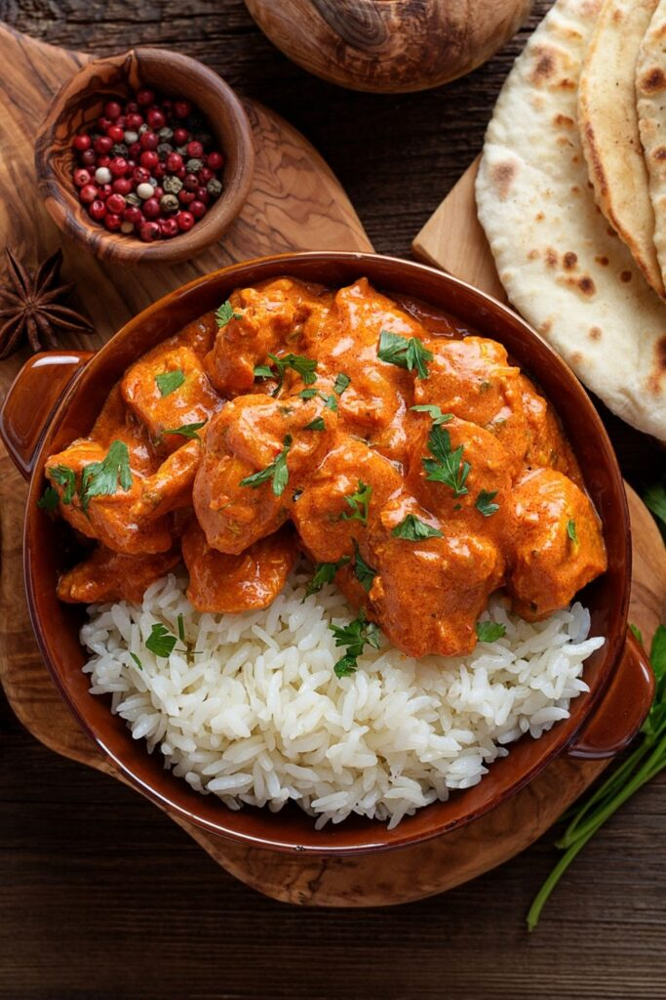

Slow Cooker Chicken Curry

Description
This healthy Slow Cooker Chicken Curry
is so incredibly easy. No browning, no preparation.
Just leave it to bubble away and come home to
the most delicious, creamy but light, coconut
milk curry.
Let’s be honest, an authentic Indian curry, Madras curry or
Thai curry, this is not. BUT it’s a super shortcut to a
delicious, easy dinner. Just what we like!
Ingredients
This is for 6 servings at 325kcal each:
- 4 cloves garlic
- 2 tsp fresh ginger
- 3 tbsp medium curry powder
- 1/2 tsp salt
- 100g mango chutney
- 400ml reduced fat coconut milk
- 1 large onion
- 1kg boneless, skinless chicken thighs
- 1 tsp garam masala
Steps
-
Add everything to slow cooker pot APART FROM
the garam masala. Thoroughly stir.
- Put lid on and cook on HIGH for 4hrs or LOW for 6hrs.
- When chicken is tender and falling apart, shred the chicken with 2 forks and mix in garam masla.
- Serve with rice.